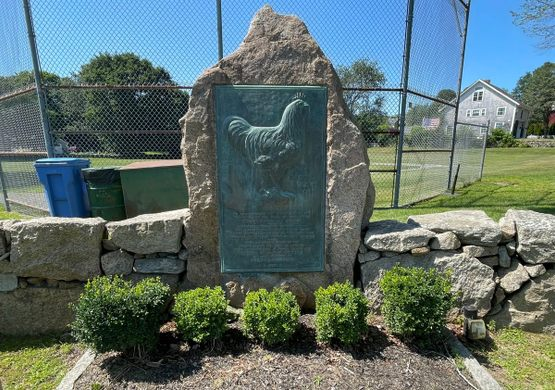
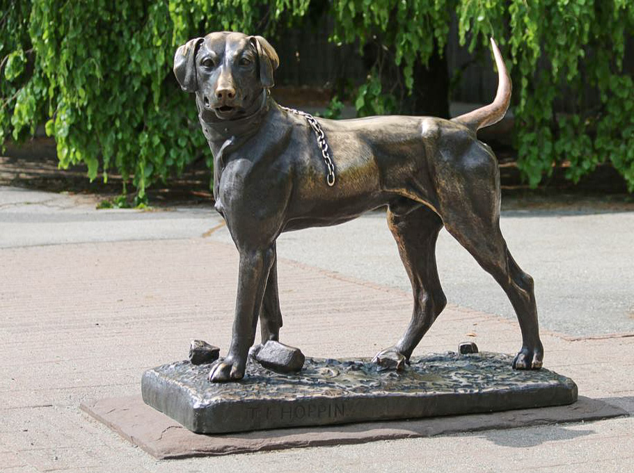

Monuments
Settler's Rock

Located in Block Island on Corn Neck Road. Settler's Rock is a Monument erected in the 1991 by European Settlers. The names of the settlers' families as well as where they reach shore are all engraved on the rock. These settlers arrived at Block Island in 1662 seeking to make a democratic settlement that would be free of their homeland's persecution. Although the land was harsh conditions and had dangerous natives, they were able to be hidden and isolated from their homeland.
Red Chicken Monument
Located in Little Compton at 18 Main Street. The Red Chicken monument is to honor the breeding of chickens that lead to a trading achievement of laying around 2 million eggs. The monument was sculpted by the American Sculptor, Henry L. Norton. This achievement was done by Issac Wilbour that bred chickens from Willam Tripp with his own. Willam Tripp himself had bred his chickens with exotic roosters from Asia that were tall and bright red. After breeding them he noticed how much bigger and meatier his chickens were. However, the most important change was their egg production giving Issac the chance to mass produce eggs.
Sentinel Dog
Located in Providence at 1000 Elmwood Avenue. The Sentinel Dog is a statue located at the Roger Williams Park Zoo. It is said the statue itself is around 172 years old with stories that says its after a real dog. A providence sculptor by the name of Thomas Frederick Hoppin created the statue as decorated his newly built home in 1851. It was later donated to the Roger Williams Park Zoo in 1896.